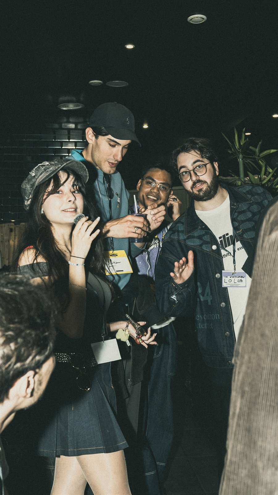
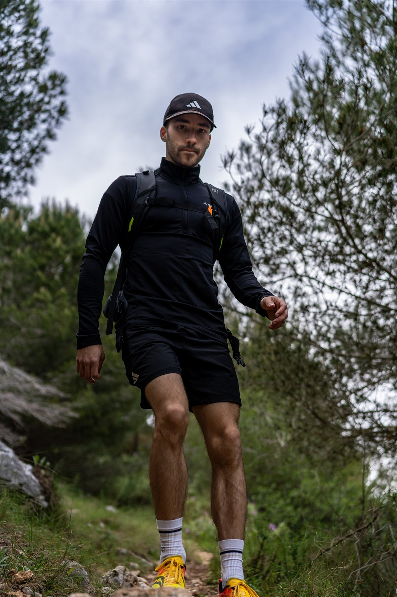
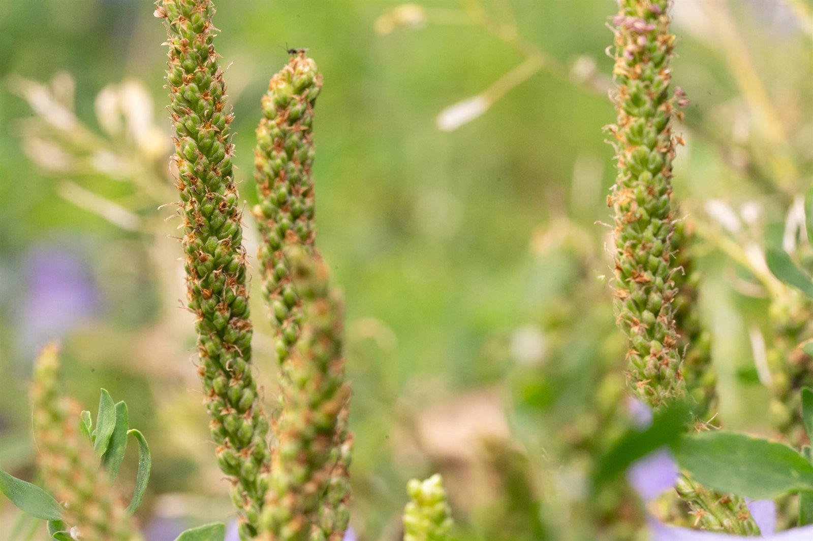

Double boîtier & réactivité
Sony A7R V à double sauvegarde SD et Sony A7 II pour passer instantanément du plan large architectural au portrait serré f/2-2.8.
De la plaine du Rhin aux crêtes des Vosges, j'accompagne festivals, entreprises et particuliers en français, anglais et allemand. Événementiel, portrait en studio nomade, macro et faune sauvage.

Basé à Strasbourg — Interventions Grand Est, France & transfrontalier (DE / CH)
Congrès, soirées networking (CreatorsLounge), scènes culturelles et savoir-faire d'artisans livrés sous 24–48h pour presse et réseaux.
Portraits corporate ou créatifs en lumière naturelle ou avec éclairage portable Godox V100 installé chez vous.
Optique Sony 100mm Macro GM et capteur 61 MP pensés pour le tirage Fine Art grand format.
Chaque série préserve l'intensité naturelle de l'instant, sans retouche artificielle ni mise en scène figée.

Festivals, conférences, networking, concerts et soirées d'entreprise.

Portraits créatifs, corporate LinkedIn, artistes et particuliers.

Faune sauvage, paysages grands espaces et détails macro 1:1.

Parcours depuis 2022, trilingue FR·EN·DE et matériel de terrain.
Sony A7R V à double sauvegarde SD et Sony A7 II pour passer instantanément du plan large architectural au portrait serré f/2-2.8.
Indispensable à Strasbourg et en zone rhénane : vos intervenants, invités internationaux et modèles sont dirigés naturellement dans leur langue.
Sélection d'aperçus presse sous 24–48h pour les événements, puis galerie privée HD optimisée web et impression grand format.
Partagez votre date, votre lieu et l'ambiance souhaitée pour recevoir un devis précis sous 24 heures.